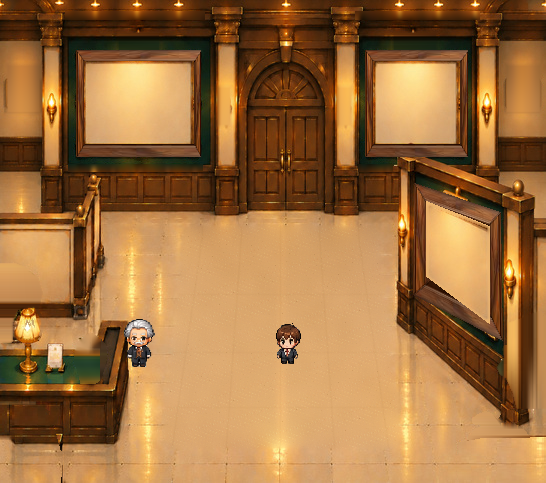

A18「とっておき美術館」｜原画 546×483・正式キャラそのまま
右手前の木製額縁を、金額縁の位置に揃えました
右手前の額縁だけを切り替えて比べられます。奥の左右額縁や建築物は変わりません。

位置修正版／空き台紙／100%
位置修正前と修正後

元の金額縁の装飾と木製額縁の木目・太さは異なりますが、基準となる展示窓と壁上の位置を揃えています。金装飾の複雑な輪郭まで画素一致させるものではありません。Lv.1への採用とゲーム本体への統合は未確定です。
右手前の額縁だけを切り替えて比べられます。奥の左右額縁や建築物は変わりません。

元の金額縁の装飾と木製額縁の木目・太さは異なりますが、基準となる展示窓と壁上の位置を揃えています。金装飾の複雑な輪郭まで画素一致させるものではありません。Lv.1への採用とゲーム本体への統合は未確定です。